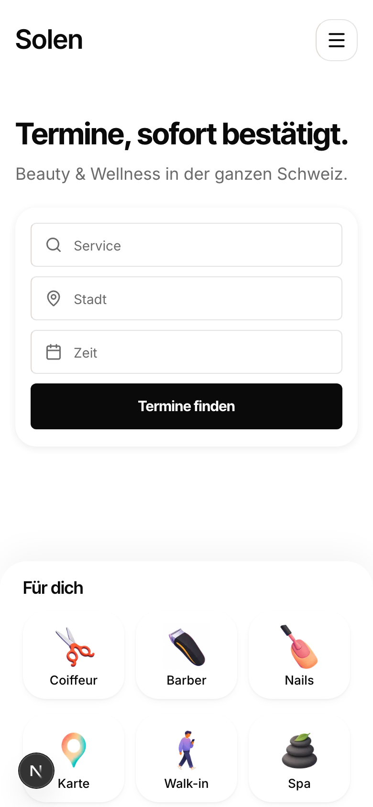
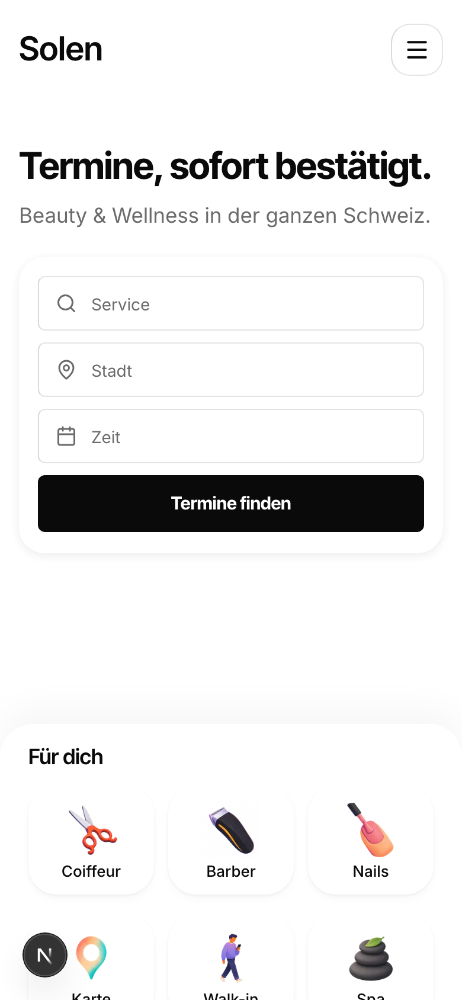
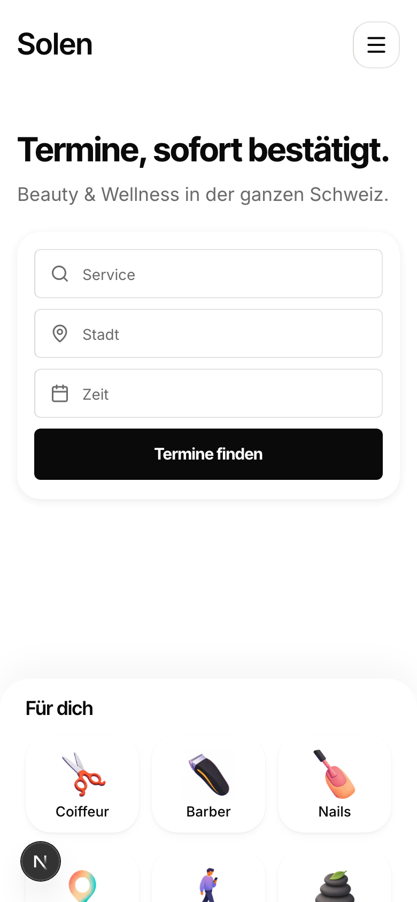
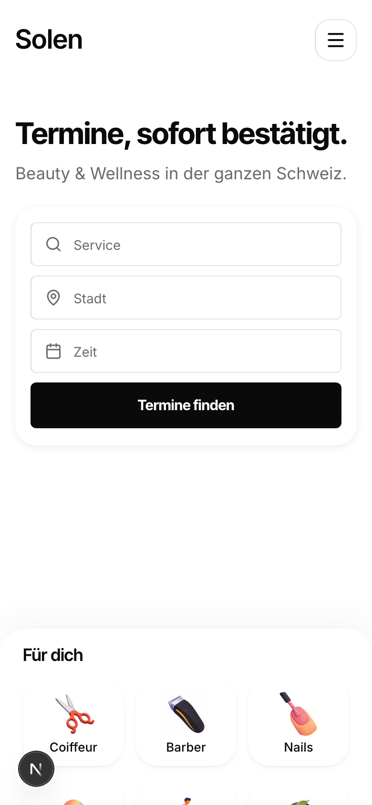
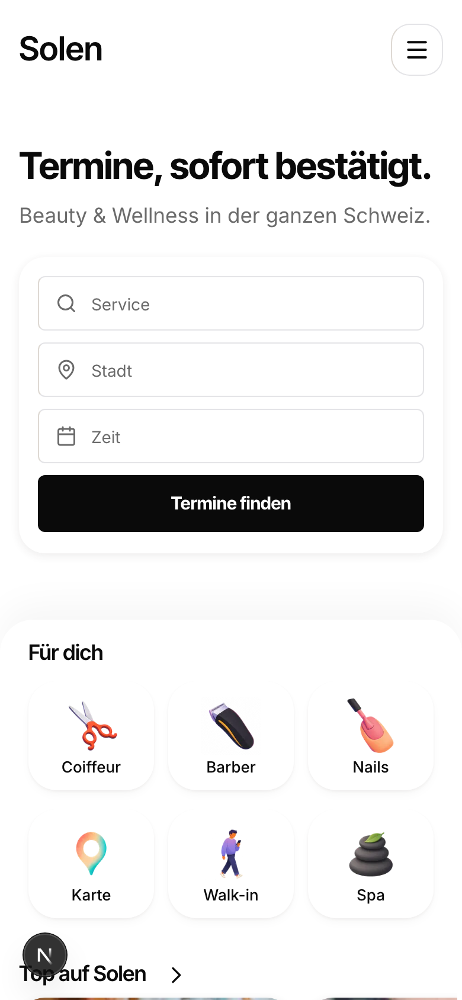
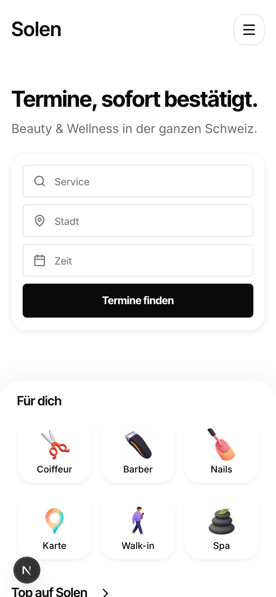
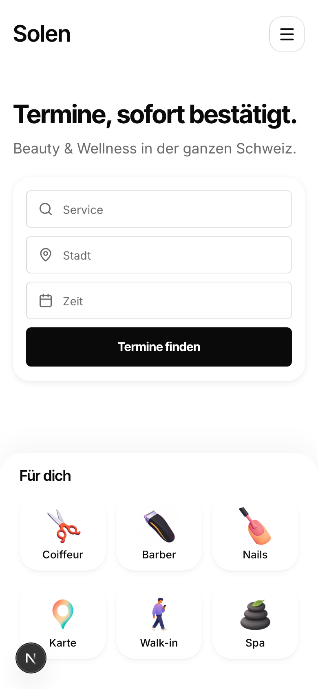
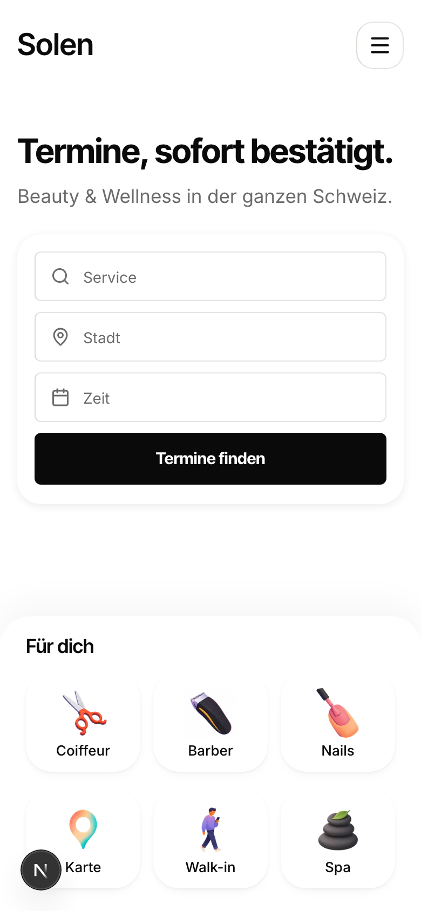

You said the gap is still too small, so this is the range above the one I showed you: 120 to 192, against today's 56. The black line is the sheet's rounded edge. The tinted bands are the top gap, logo to headline, and the sheet gap, search card to the sheet's edge. The card never moves, 40.6 percent in every frame.
The gap can keep growing, but the thing you asked for earlier, the category cards poking over the fold, dies as it does. Measured: at a gap of 120 the second row still shows 97px, at 144 it shows 73px, at 168 it shows 49px, and at 192 only 25px is left. Past roughly 200 the second row is gone and the first screen ends with the first row of cards and white.
So the honest range is 120 to 168. I have marked 144: the sheet's edge sits at 72 percent of the screen, twice the top gap, the break between hero and sheet is unmissable, and the second row still pokes by 73px. The balance argument I made last round loses to your eye here, and that is fine, it was an argument, not a lock. Nothing below the hero changes and the page grows by 88px at 144.




| Sheet gap | Panel margin | Sheet edge | First card row | Second row poke | Card centre | Page |
|---|---|---|---|---|---|---|
| 56, today | 48 | 62.0% | 68% | 165px | 40.6% | 4281 |
| 72, last round's mark | 64 | 63.9% | 70% | 149px | 40.6% | 4297 |
| 120 | 112 | 69.6% | 76% | 97px | 40.6% | 4345 |
| 144 | 136 | 72.4% | 78% | 73px | 40.6% | 4369 |
| 168 | 160 | 75.3% | 81% | 49px | 40.6% | 4393 |
| 192 | 184 | 78.1% | 84% | 25px | 40.6% | 4417 |
The first row of category cards stays fully visible at every value here, so the sheet always arrives with content, never as an empty ledge.
These are the four you already saw and called too small, kept here only so the jump is legible.



